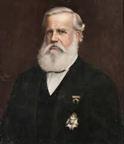

Bem-vindo ao Segundo Reinado
Explore a história do Brasil durante o período do Segundo Reinado, marcado pela liderança de Dom Pedro II e por importantes transformações políticas, econômicas e sociais.
Destaques do Segundo Reinado
🏛️ Política
Conheça o funcionamento do Parlamento Bicameral, o Poder Moderador e os partidos políticos da época.
Saiba mais☕ Economia
Entenda o ciclo do café, a modernização econômica e as relações internacionais do Brasil imperial.
Saiba mais🎭 Cultura e Sociedade
Explore a diversidade cultural, imigração e os movimentos sociais que marcaram a época.
Saiba mais📅 Linha do Tempo
Confira os eventos mais importantes do Segundo Reinado, desde o Golpe da Maioridade até a Proclamação da República.
Ver linha do tempo completa